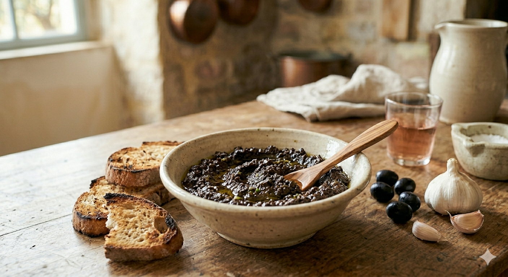

Ici, point d'anchois ni de câpres. Pour apprécier la finesse de l'Olive de Nyons (AOP), il faut savoir rester simple. C'est une recette qui laisse toute la place au fruit et à son parfum de noisette.

Si la purée d'olives est ancestrale en Provence, la "Tapenade" telle qu'on la nomme souvent aujourd'hui a une origine bien précise. Elle fut créée en 1880 par le chef Meynier du restaurant La Maison Dorée à Marseille. Pour garnir des œufs durs, il décida de mélanger des olives à des câpres (appelées tapeno en provençal, d'où le nom) et des filets d'anchois.
Cependant, dans nos familles, la tradition est restée plus sobre : on pilonne l'olive pure pour ne pas trahir son goût. C'est cette version authentique, débarrassée des ajouts du XIXe siècle, que je vous livre ici pour honorer l'olive de Nyons.
1. Le Dénoyautage : Armez-vous de patience et dénoyautez vos olives de Nyons à la main. C'est le secret pour vérifier la qualité de chaque fruit.
2. Le Pilonnage : Dans un mortier (ou au mixeur pour une texture plus fine), placez les olives et la petite gousse d'ail. Écrasez l'ensemble jusqu'à obtenir une pâte homogène.
3. L'Émulsion : Versez l'huile d'olive en filet tout en continuant de mélanger. La préparation doit devenir brillante et onctueuse.
Le conseil de Marie : Ne rajoutez jamais de sel. L'olive de Nyons, préparée en saumure, apporte déjà tout l'assaisonnement nécessaire. Servez avec un bon pain de campagne toasté.